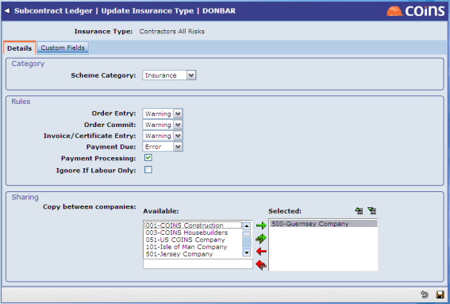
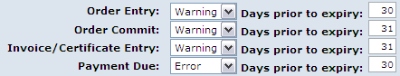

Setting Up Types
allows you to set up the types of insurance or you want to check for, and the for each type.
The values that can be set are the validation settings that apply generally for of this type (whether to give error or warning when a transaction is entered; how many days prior to to check; whether to validate at payment run).
You can add and amend , and change the status of the between 'none', 'default,' and 'mandatory'.
marked as default will be set against a new subcontractor when added.
marked as Mandatory cannot be deleted for a subcontractor. (Note: if the SC parameter INSMAND = Y then the date, provider, and number must be entered if the type is mandatory).
To set up a new type:
- Go to .
- Add a new record.
- Select the category of the .
- Insurance - These require insurance-related information such as policy number and provider.
- Dated Items - These items have dates but do not show insurance-related fields.
- Qualification - These are for compliance items which simply need to be met once and do not expire. These are more likely to be used on a subcontract than a subcontractor.
- Set up when to make the checks and what action to take.

There are separate checks for order entry, order committing, invoice or certificate entry, payment due, and payment processing (see - Checks Made).
The checks can be set so that checks for a date earlier than the actual , so you can be warned if the is due to expire.
To set one or more of these checks:
- Set the drop-down fields as follows:
- To prevent the transaction if the test fails, set it to Error.
- To issue a warning if the test fails but allow the user to continue the transaction, set it to Warning.
- To issue a warning if the test fails before the date, and an error if the test fails after the date, set it to 2-Level.
- To switch off the entry checks, mark the test as <None>.
- Set the Days prior to field as appropriate:
- Zero = date.
- Non-zero value = the number of days before the date that the test would fail.

- If the Add Levy field is available, a levy can be added to the certificate amount if the insurance check fails. This field will only show if the SC parameter LEVYITEM has a valid certificate definition line ID entered. To add the rate on the associated definition line to the certificate if the insurance check fails, the Add Levy field.
- The payment processing check, if it is ed, always works off the date.
- On the Custom Fields tab, choose any additional fields you want to display when updating the details of this for a subcontractor.
- You can set up the to be shared across ; see Sharing Across .
- Save the record.
- Use the Choose Action selector to change the status if you want to apply the new to existing and new subcontractors automatically. See Applying to Subcontractors.
Custom Fields
You can add custom fields to any , to allow you to record and validate additional information. You need to set up a single list of all the fields you might want to include against any of the .
To set up user-defined fields:
- Go to Page Field Sets.
- Click the link for the Function %WSC2000BSCW.
- Set the Field Set selector to User Defined.
- Click
 to create a new field set; for example: UWSYI%WSC2000BSCW0001.
to create a new field set; for example: UWSYI%WSC2000BSCW0001.
- Add a record for each user defined field. The field names are of the form scw_custom_xx__n, where xx represents the data type (ch = character; in = integer, da = date; de = decimal; lo = logical), and n the number of the field. For example, scw_custom_da__1 will be a date field.
You can set up a maximum of 25 fields for each data type.
- Save the field set.
- To make a field required, add it to the list in the SC parameter MISSING.